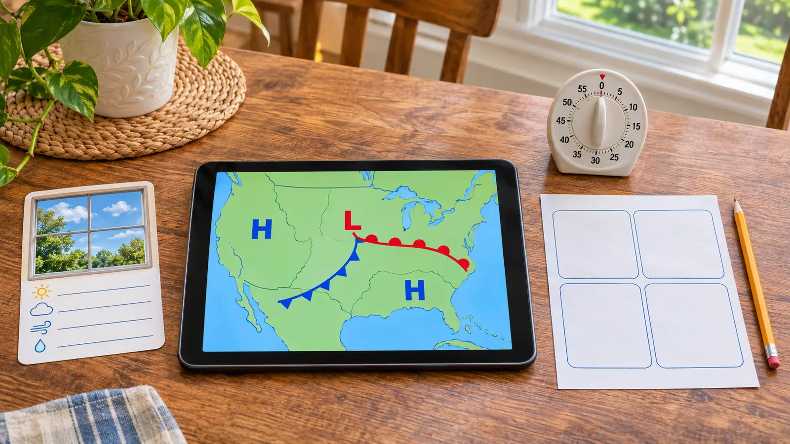

1. Valid time
Copy the map’s issued or valid time and time zone. A map for tomorrow is not a report of the sky right now.
AT HOME · 20 MINUTES · NO-SPEND · EXPLORATION
Do not ask a child to predict tomorrow from one symbol. Read the map’s valid time, find one H or L, trace one front, compare one outdoor observation, then open the actual local forecast.

A surface weather map is a snapshot or forecast product with a valid time. It can show high- and low-pressure centers and boundaries called fronts. It cannot tell a family everything that will happen at one address. In 20 minutes, the win is not “guess tomorrow.” The win is: read the timestamp, identify one symbol, describe what it means, compare it with what is visible outside and know where the real local forecast lives.
Use an adult-managed device and the National Weather Service’s official National Forecast Maps. No account, app purchase, printing or location sharing is required.
This fits roughly ages 8 and up with an adult reading the legend. Younger children can find colors or letters, but the adult owns all safety decisions and the final forecast. Cost is zero with existing supplies and internet access.
NOAA JetStream says a cold front is the leading edge of colder air displacing warmer air and uses a blue line with triangles pointing in the direction of motion. A warm front is the leading edge of warmer air replacing colder air and uses a red line with semicircles. Stationary and occluded fronts have different alternating symbols. “Cold” and “warm” are relative to the air masses; a summer cold front can still involve hot air.
High and low pressure describe pressure systems, not a moral rating. Weather near a family depends on position, timing, moisture, terrain and other features. A national chart may omit local hazards and timing details. Do not infer “no warning” because a symbol is far away or “storm guaranteed” because a low is present.
The NWS forecast-map page includes short-range forecast products, medium-range products, precipitation amounts and surface analyses. An analysis describes conditions at a stated time; a forecast chart describes a future valid period. Read the product label. Use one simple chart, not every layer. For a school-night activity, the national forecast chart or a fronts-only surface map is enough.
When the official map is hard to read on a small screen, do not pinch and guess. Move to a larger screen, use the high-resolution option or stop. Accessibility matters more than finishing. A child with color-vision differences can use symbol shapes—triangles, semicircles and letter centers—rather than color alone.
Active severe weather: stop and follow the warning. No internet: draw the four common front symbols from NOAA’s educational page and label them “practice,” not current conditions. Map too dense: find only the valid time and one H/L. Child guesses wildly: return to “what does the chart actually show?” Low energy: do the timestamp and one front in five minutes. Want a longer observation: use the seven-day rain log without chasing storms.
Skip when severe weather requires action, screens are already the conflict, the child will treat the exercise as permission to make safety calls, or the map cannot be read accessibly. Use the NOAA Weather Radio guide for alert hardware or the 20-minute stargazing reset on a safe clear night.
Reviewed November 8, 2026 using NOAA JetStream’s surface weather map guide, the National Weather Service National Forecast Maps, and the NWS surface weather chart glossary. The four-box card, 20-minute schedule and zero-forecasting boundary are Mr Adventure Dad’s original framework. No affiliate links are attached.
MAKE THE WEEK COUNT
Build the plan your family can finish well, then leave enough energy for the next part of the day.
More family plans